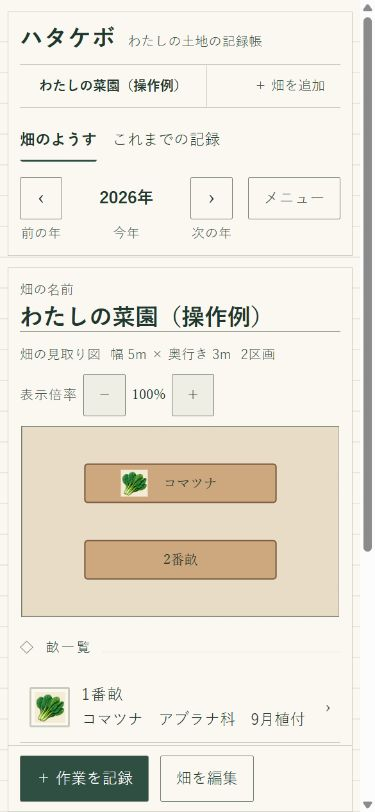
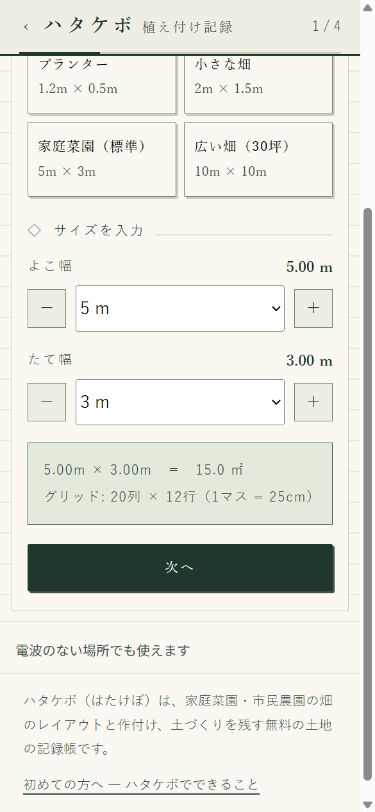
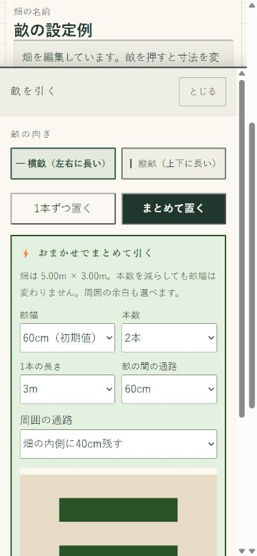
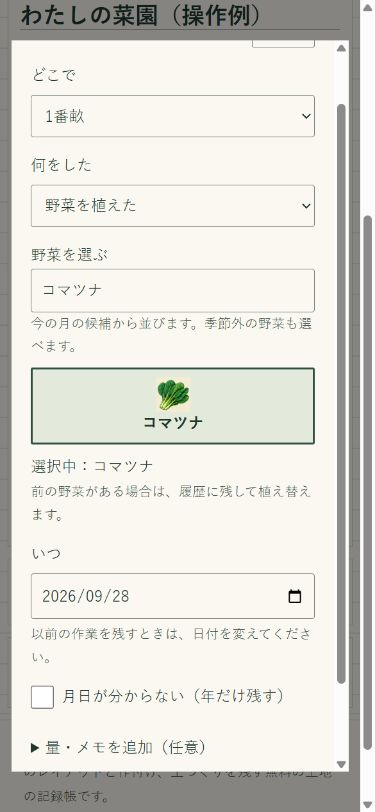
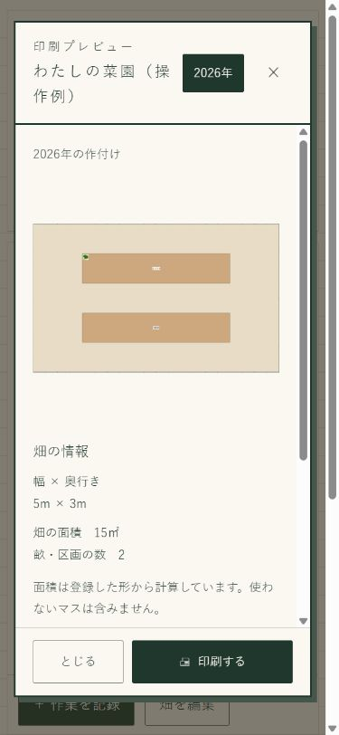

はじめてのハタケボ · 使い方
家庭菜園の畑・畝の
レイアウトを作る方法
畑の広さを決めて、畝を置く。
植えた野菜を残せば、自分の畑の見取り図ができます。
「通路を残すと、畝は何本置ける？」「去年、ここに何を植えた？」。そんなときのために、ハタケボで畑を図にしてみましょう。スマートフォンでもパソコンでも、ドラッグ操作を使わずに作れます。
- 無料
- 会員登録不要
- インストール不要
この記事で作るもの
まずは、畝が2本ある畑から。
5m×3mの畑に、横に長い畝を2本置き、1番畝にコマツナを記録します。もう1本は空いたままで大丈夫です。
画面は説明用の記録です。寸法や野菜は操作例であり、栽培方法や植え付け時期のおすすめを示すものではありません。
ハタケボを別タブで開くこの記事を見ながら操作できます。

始める前に確認すること
まずは、畑のよこ幅とたて幅を測っておきます。市民農園なら、区画の案内に寸法が書かれていることもあります。
- 自分が使える区画は、何m×何mか。
- 入口や水場は、畑のどちら側にあるか。
- 区画の内側にも通路が必要か、外側を歩けるか。
共有通路は自分の畑に含めず、農園の区画に合わせて登録します。畝を置けるだけ並べるのではなく、実際に歩いたり、しゃがんで作業したりできる場所を残しましょう。
手順 1
畑の大きさと名前を登録する
- ハタケボを開き、「新しい畑を登録する」を押します。
- 「畑の大きさ」で、よこ幅を5m、たて幅を3mに設定し、「次へ」を押します。自分の畑では、測った寸法を選んでください。
- 「区画の形」「周囲の目印」を確認して進みます。目印は省略しても構いません。
- 畑の名前を付けて「帳簿に登録する」を押し、「ハタケボをひらく」を選びます。
畑が登録済みの場合は「畑を追加」から別の畑を作れます。新しい畑の各辺は50cm〜15m、25cm刻みで設定できます。

手順 2
畝の幅・長さ・通路を決める
ここでは、まだ畝がない畑に2本まとめて置きます。
- 「＋ 畝を作る」を押します。
- 向きは「横畝（左右に長い）」、置き方は「まとめて置く」を選びます。
- 下の操作例に合わせて、幅・本数・長さ・通路を選びます。
- 画面を下へスクロールして配置図を確認し、「この配置で2本つくる」を押します。
- 配置ができたら「編集を終える」を押します。
- 畝幅
- 60cm
- 本数
- 2本
- 1本の長さ
- 3m
- 畝の間の通路
- 60cm
- 周囲の通路
- 畑の内側に40cm残す
この例では、畝2本と間の通路で1.8m。さらに上下に40cmずつ残しても2.6mなので、たて3mの畑に収まります。横も、畝の長さ3mと左右40cmずつで3.8mとなり、幅5mの内側に収まります。
これは配置の計算例です。通路や畝の幅は、使う道具や作業姿勢、育てる野菜、農園の決まりに合わせて変更してください。

手順 3
植えた野菜を記録する
- 畑の図の畝、または畝一覧の「1番畝」を押します。
- 「野菜を植えた」を選びます。
- 野菜の名前で検索し、該当する野菜を押します。例では「コマツナ」を選びます。
- 「いつ」の日付を確認して、画面下の「記録を残す」を押します。
保存すると、畑の図に野菜が表示されます。2番畝は、まだ植えていなければ空いたままで構いません。
今の月の候補から野菜が並びますが、季節外の野菜も選べます。これは作業を記録する機能です。画面例の日付は、植え付け適期を示すものではありません。

手順 4
畑の図を印刷する
- 畑の画面上部にある「メニュー」→「印刷する」を押します。
- 印刷プレビューで、畑の名前・年・図・畝一覧を確認します。
- プレビュー内の「印刷する」を押し、端末やブラウザーの印刷画面でプリンターと用紙などを選びます。
畑の図は用紙に合わせた大きさになり、幅・奥行き・面積などの情報が併記されます。実寸大の図面ではありません。
スマートフォンでは印刷に対応するプリンターなどが必要です。PDF保存が選べる環境なら、紙に印刷せずPDFとして残すこともできます。

途中で迷ったら
畝の作成ボタンが押せません。
畝が畑の外にはみ出したり、ほかの畝や使わない場所に重なったりしていないか、画面の説明を確認してください。「まとめて置く」では通路と周囲の余白も必要です。幅・長さ・本数を減らして、配置図を見直します。
後から畝の位置や大きさを直せますか？
「畑を編集」で畝を選び、「この畝を編集」→「畝の大きさ・位置を編集」から変更できます。変更する前に、画面上部の年も確認してください。
1本の畝に違う野菜を植えたいです。
「畑を編集」で畝を選び、「2区画に分ける」を使うと、長さ60cm以上の畝を半分ずつに分けられます。それぞれの区画に別の野菜を記録してください。
畑で電波がなくても使えますか？
出かける前に通信できる場所でアプリを開き、「電波のない場所でも使えます」の表示を確認してください。準備後は同じ端末・同じブラウザーで畑の閲覧や記録ができます。この記事は通信できる場所で読んでおくと安心です。
次の季節には、年を切り替えて以前の作付けを見返せます。肥料や堆肥を入れた日も「作業を記録」から、同じ記録帳に残せます。